Tratamento de Dados
Tratar dados é pegar os Dados enviados via Js e fazer eles não se perder, exemplo, quando perguntado o nome no window.prompt, o nome não vai apenas sumir, poderemos usa-lo para algo util.
para isso colocaremos o window.prompt dentro de uma variavel chamada "nome" e concatenamos a variavel nome num window.alert, observe o codigo:
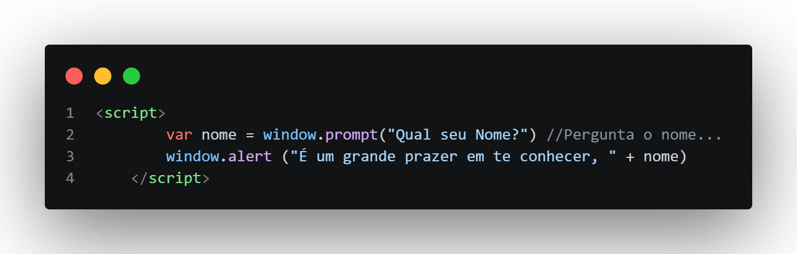
e o resultado após colocar o nome "Derick" no window.prompt é:
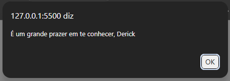
Podemos usar varios tipos de variaveis também, pedindo duas variaveis, no próximo exemplo é pedido dois numeros, que ao passar serão somados.
ANTENÇÃO! se apenas fizermos uma variavel soma de n1 e n2 ele não soma, ele concatena, ou seja, 1+2= 12, não 3 como seria o correto, pois ele recebe os numeros como string para resolver isso devemos converter para numberpara fazer isso podemos usar:
Number.parseInt(n): converte o dado para um numero inteiro;
Number.parseFloat(n): converte o dado para um Float
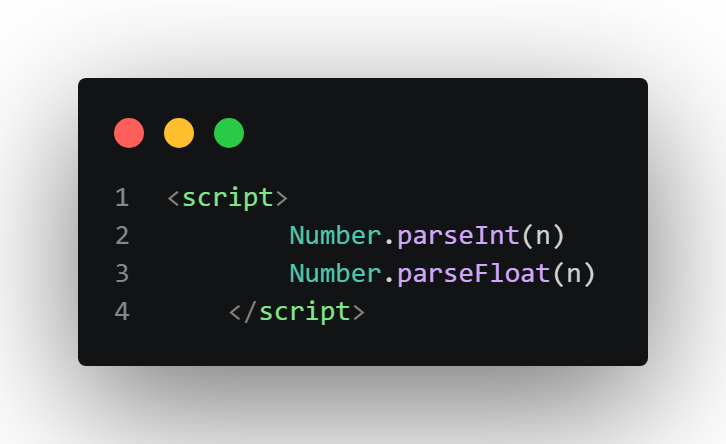
então se queremos somar n1+n2 devemos converte-los para numeros, podendo converter direto na variavel q pede o numero, exemplo do n1 ou converter na variavel de resposta, exemplo do n2:
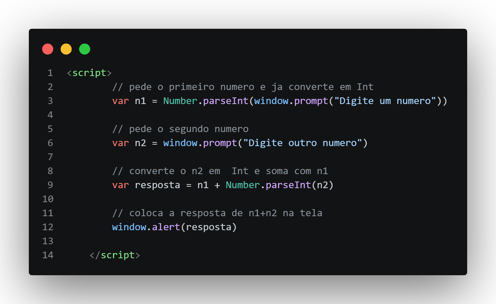
Resposta do Código
n1
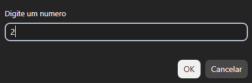
n2
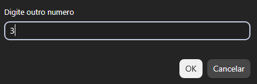
resultado
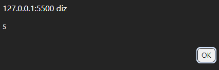
podemos resumir isso com Number(n) ao invés do Number.parseInt ou Number.parseFloat, a menos que eu queira forçar um INT ou FLOAT;
para String seria:
String(n) ou n.toString()
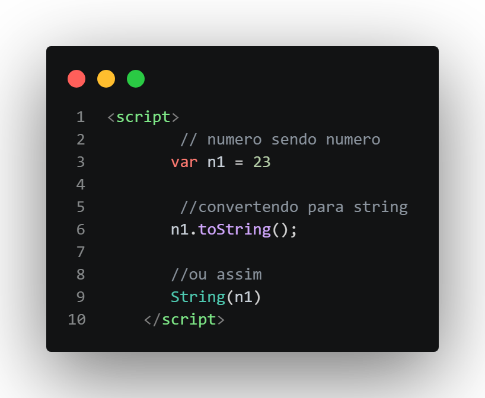
Formatação de String
concatenação: como ja visto anteriormente podemos concatenar strings apenas usando "+"
"Derick" + "Luiz" = "Derick Luiz"
agora observe a dificuldade para formular uma frase, no codigo colocaremos uma variavel para nome, idade e nota e formularemos a frase "O Aluno X com X anos, tirou X nota"
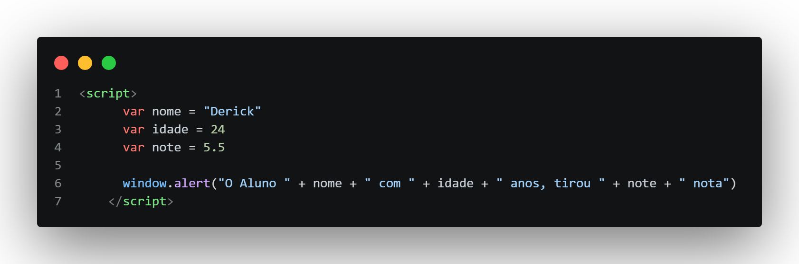
resultado
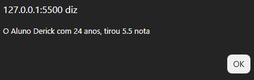
Até funciona, mais é horrivel ter que ficar concatenando deste jeito, podendo até se perder varias vezes, para resolvermos isso usamos templates strings, assim como python podemos usar f"aaaaaa{exemplo}" para colocar variaveis dentro da string, em Js temos o ${variavel}` ele se chama placeholder, e para usar, escrevemos a frase dentro de crases e não aspas como estamos acostumados
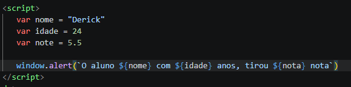
resultado
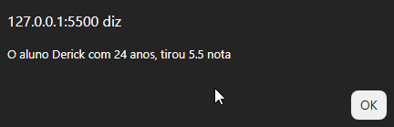
Fora isso temos tambem:
- .length:diz quantos caracteres tem a string
- .toUpperCase():deixa as letras maiusculas
- .toLowerCase():deixa as letras minusculas
Exercício
Faça o site perguntar o nome da pessoa e escrever na tela usando o document.write que é o comando para escrever no html usando JS
PAGINA DO EXERCICIOFormatando Numeros
Para formatar numeros, temos algumas opções, imagine o numero 1500.5, se pedirmos para mostra-lo ele sairia 1500.5, mas podemos trata-lo de algumas formas, por exempo, podemos pedir para que mostre mais casas além do ".5" com o toFixed(numero de casas a mais)
no exemplo a baixo pedirei para que mostre duas casas alem do ponto, ou seja, a proxima casa após o .5;
1- o que foi feito: Definido a variavel numero com o dado 1500.5
2- chamado a variavel numero onde a resposta foi 1500.5
3- depois foi usado o comando .toFexed(2) para mostrar o 0 alem do 5
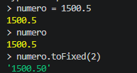
tambem podemos alterar o "."para "," usado o comando .replace("substituido", "substituto")
no comando usarei o .replace junto ao .toFixed para mosrar o numero alem do .5 e tambem mudar o .5 para ,5
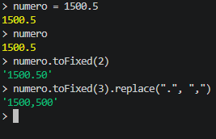
Agora digamos que iremos falar sobre moedas, por exemplo, um salario em Reais;
faremos da seguinte forma:
numero.toLocalString('pt-br', {style: 'currency', currency:'BRL'})
numero > nome da variavel
.toLocaleString() > diz e é uma string localizada por pais ou idioma
'pt-br' > localiza que é do Brasil
{} > as chaves significa que são opções de formatação
style: 'currency' > esta dizendo "formate como Dinheiro"
currency:'BRL' > é pedir pra usar dinheiro BRASILEIRO
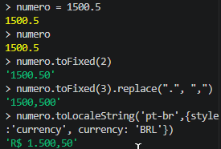